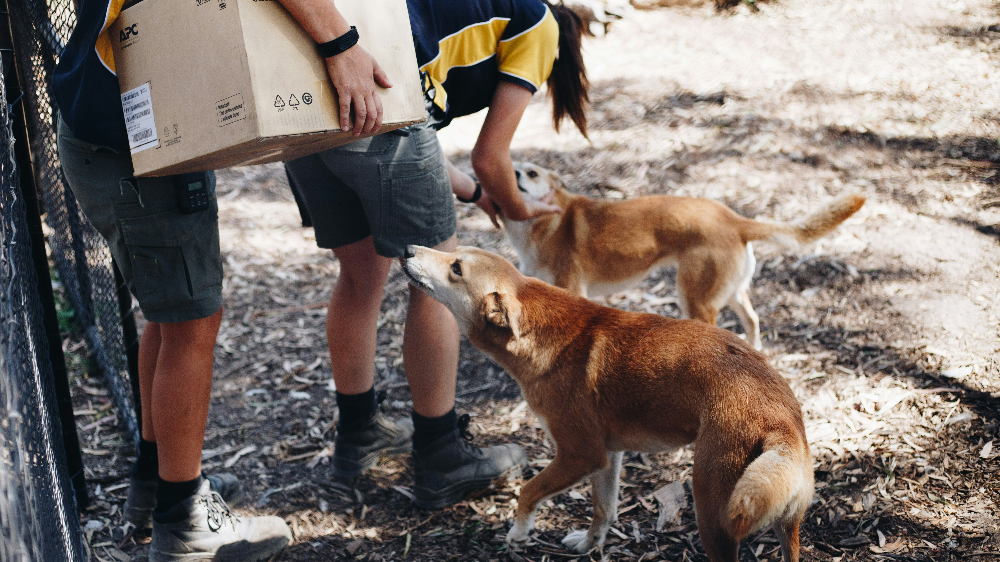
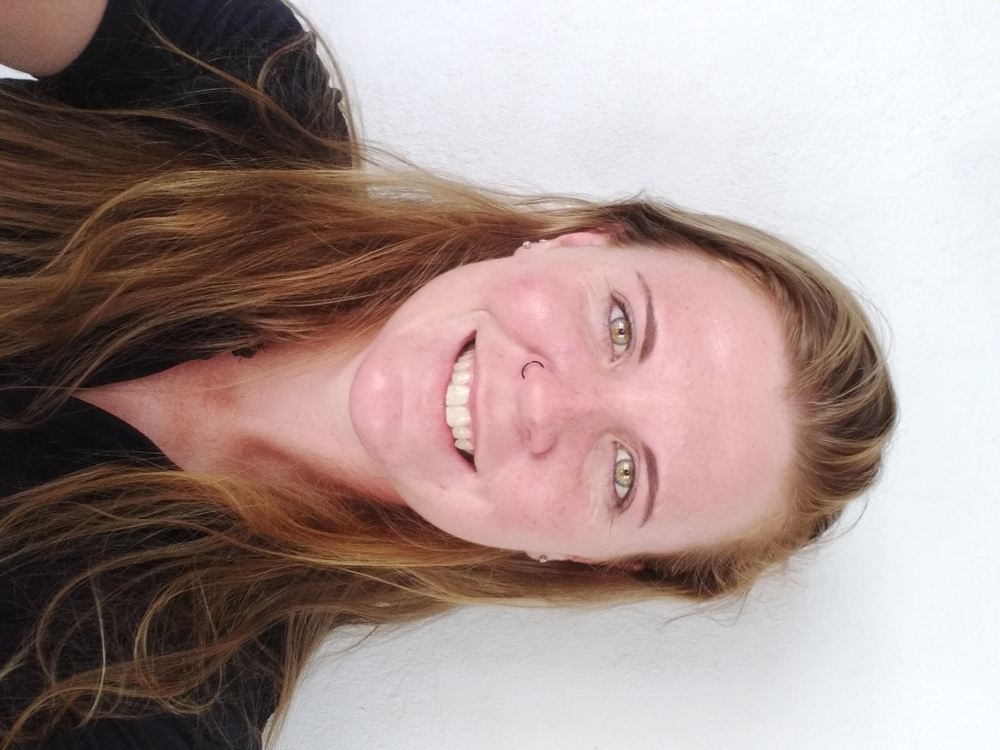

About Astro's Canine Rescue
A community-driven non-profit dedicated to giving every rescued dog a second chance at a loving home since 2017.
Mission and Vision
Our Mission
The mission of Astro's Canine Rescue is to provide every rescued animal a second chance at life by ensuring they receive compassionate care, rehabilitation and a permanent loving home.
Our Vision
The vision of Astro's Canine Rescue is to have no animal ever suffer from abandonment or abuse. For Table View to be a town that is built on responsible ownership, compassion, and a thriving community of animal welfare advocates.
Our Story

Astro's Canine Rescue was founded in Table View, Cape Town in 2017 by a group of animal-loving friends who saw the greater need for an animal rescue in the Table View area.
What began as a small backyard operation has grown into a fully registered non-profit organisation under the Non-Profit Organisation Act 71 of 1997, caring for approximately 30 animals at any given time.
The rescue has developed an affiliated foster network of 15 households across Bloubergstrand, Parklands and Sunningdale - all united by one simple belief: every dog deserves a second chance.
Meet Our Team
-

Karsten Wingeart
Founder & Director
-

Danny Postman
Shelter Manager
-

Priya Reddy
Volunteer Coordinator
-

Nartan Buyukyildiz
Vet Liaison
Our Values
-
Compassion
We treat every animal and person with kindness, empathy and care - no exceptions.
-
Integrity
We operate transparently, spending every rand donated directly on animal care and welfare.
-
Dedication
We are committed to never giving up on an animal, no matter how long rehabilitation takes.
Our Impact
- 8 Years Active
- 350+ Dogs Saved
- 280+ Adoptions
- 45+ Volunteers
Our Partners
- Table View Veterinary Clinic
- Blouberg SPCA
- Petzone Table View
- Cape Town Animal Welfare
- Sunningdale Community Foundation